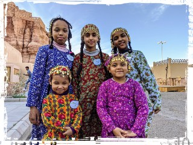

サウジアラビア

| Facebookページへは各 |  |
から飛べます |
【バーレーン1】空港から歩いて、古い家並みの残るムハラクという町にやってきました。こういう路地裏のある町がなにより好きなのです。
水井 彰さんの投稿 2019年12月25日水曜日
【バーレーン2】バーレーンの首都、マナーマとその近郊を巡りました。小さな国ですが世界遺産だってちゃんとあります。 母語なんじゃないかというくらい英語も通じ、意外と旅しやすい国でした。
水井 彰さんの投稿 2019年12月26日木曜日
【サウジアラビア1】遂にやってきましたサウジアラビア。でも入国までが大変で、さらにホテルへのチェックインも大変でした。 まだまだ受け入れ体制が整っているとは言い難い感じで、時間と気持ちに余裕がないとちと厳しいかもしれません。
水井 彰さんの投稿 2019年12月27日金曜日
【サウジアラビア2】アラビア半島の八割を占める大きな国なので、どう回るかは重要です。 手始めに、半島最古の町の一つと言われるフフーフに砂漠の高速鉄道で向かいます。
水井 彰さんの投稿 2019年12月28日土曜日
【サウジアラビア3】フフーフ界隈はアハサーオアシスと呼ばれる昨年登録されたばかりの世界遺産。しかしエリアで指定されているため具体的にどこに行けば良いのかわかりません。 しかもこんな時に限ってホテルのフロントが英語を解さない。さてどうしたものか。
水井 彰さんの投稿 2019年12月29日日曜日
【サウジアラビア4】アラブでもっとも保守的なこの国の中でも更に一番保守的とされる町ブライダへ、長距離バスで向かいます。 風紀違反を厳しく取り締まる宗教警察ムタワの姿はMBS王太子の規制緩和策のおかげかリヤド市内でも見かけませんでしたが、ブライダではどうでしょう。
水井 彰さんの投稿 2019年12月31日火曜日
【サウジアラビア5】イスラム暦で動くこの国では西暦の新年に意味はなく、今日もいつもと同じ時間が流れている…はずなのですが、閉まっている店が多いような気も。 更に北部の都市ハイエルへとやってきました。イラクに近づきすぎるのは避けたいので、この町を今回の旅の北限とするつもりです。
水井 彰さんの投稿 2020年1月1日水曜日
【サウジアラビア6】異教徒を完全拒絶するメッカとは異なり、ムハンマドの墓がある第二の聖地メディナでは近郊まで近づくことを許されるそうです。 ではターミナルが入域禁止区域に位置する長距離バスの利用は認められないのでしょうか。サウジに来た以上、リスクがあってもトライする価値はあると考えました。
水井 彰さんの投稿 2020年1月2日木曜日
【サウジアラビア7】ペルシャ湾岸のバーレーンを出発して陸路でひたすら西へ。遂に最終目的地である紅海沿岸の世界遺産、古都ジェッダに到着。 ここ数日での中東情勢の急激な悪化が気がかりですが、開放政策の揺り戻しがくることなく、地域の平和と安定が保たれることを願って、アラビア半島横断の旅を終えます。
水井 彰さんの投稿 2020年1月5日日曜日